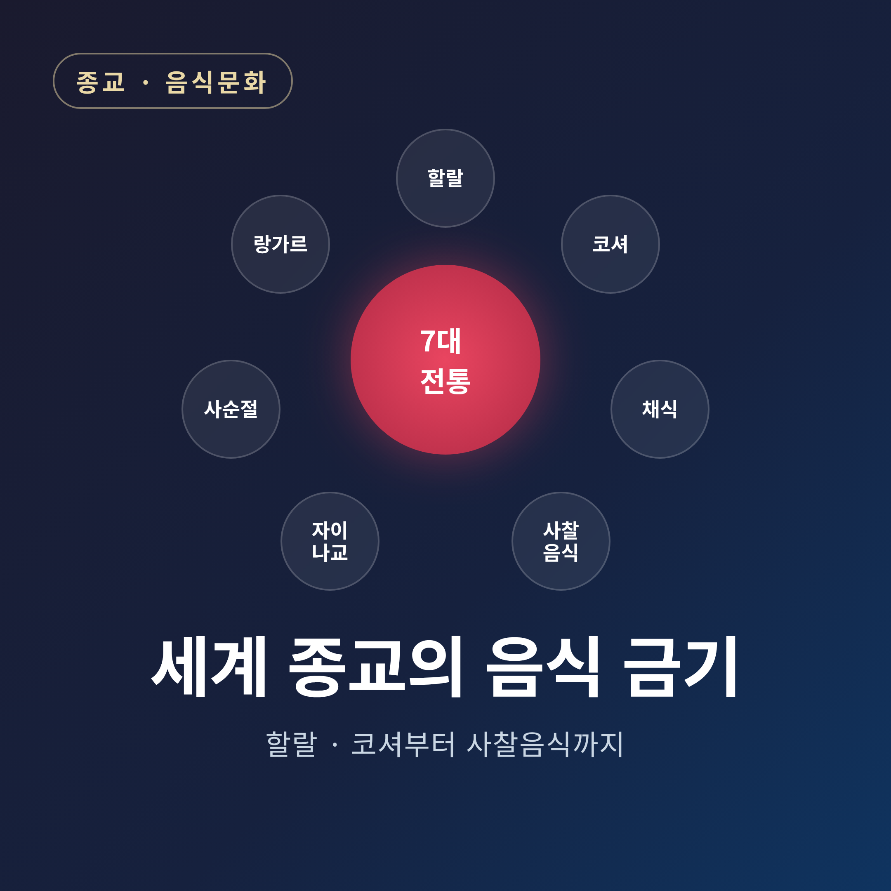
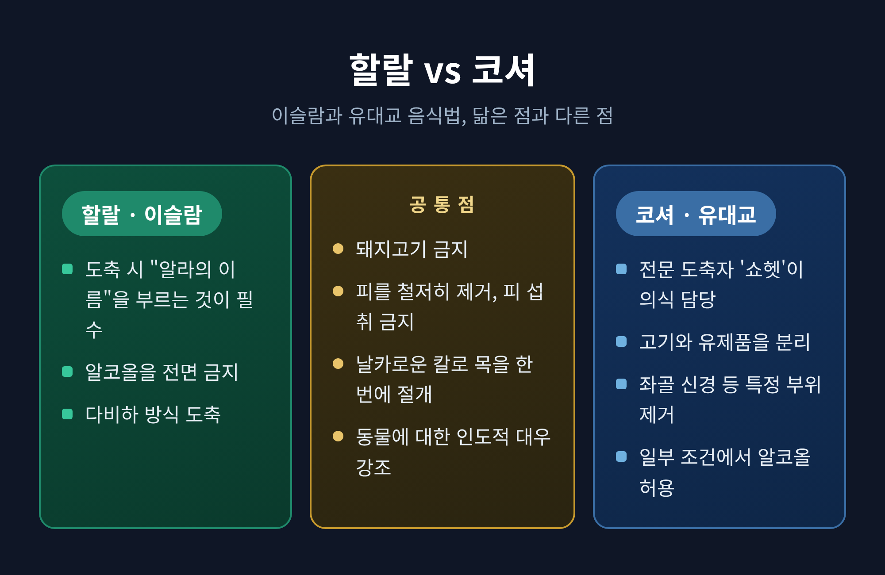
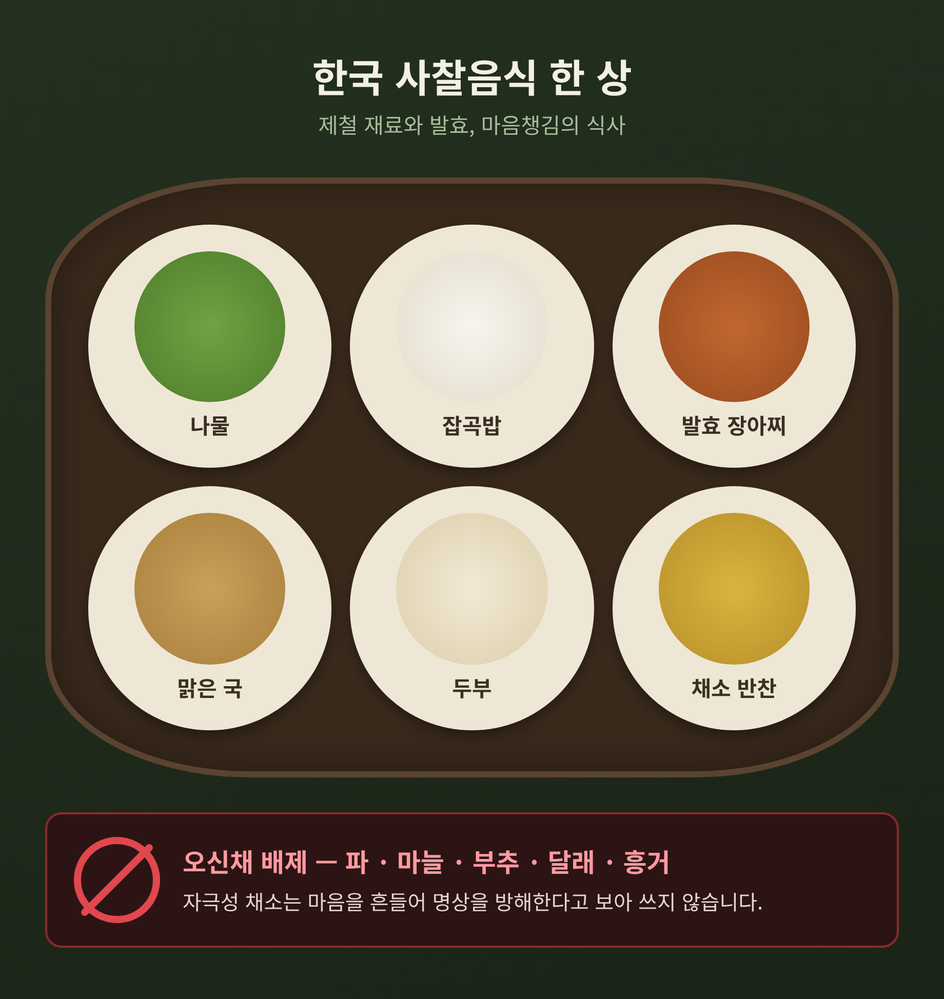

세계 종교의 음식 금기 정리 — 할랄·코셔부터 사찰음식까지 7가지 전통

오늘은 세계 종교의 음식 금기를 한자리에 정리해 보려 합니다.
먼저 핵심부터 짧게 말씀드립니다. 이슬람은 돼지고기와 알코올을 금하고, 유대교는 고기와 유제품을 분리하며, 힌두교·불교·자이나교는 채식을 중시하고, 기독교는 사순절에 절제를, 시크교는 평등한 공동 식사를 실천합니다. 이 글은 어느 종교가 옳고 그르다를 가리는 글이 아닙니다. 각 전통이 "왜" 그렇게 먹고, 또 먹지 않는지를 그 내적 논리에 따라 차분히 살펴보는 자리입니다.
왜 종교는 먹는 것을 규정할까
음식 규율은 임의로 생긴 규칙이 아닙니다. 각 종교의 신학과 역사, 경전 해석에서 비롯됩니다.
학계가 공통적으로 지적하는 기능은 몇 가지로 모입니다.
- 정체성과 공동체 결속: 음식은 종교 정체성의 강력한 표지가 되어, 한 공동체를 다른 공동체와 구별합니다.
- 영적 훈련과 자기 절제: 단식 같은 절제는 세속적 가치보다 영적 가치를 앞세운다는 표현입니다.
- 경계 짓기: 음식 규칙은 "구별됨"을 드러냅니다.
- 자원 보존 가설: 일부 인류학적 해석은 음식 금기가 특정 종(種)의 과소비를 막는 장치로 작동했다고 봅니다.
다만 이런 해석은 어디까지나 학술적 관점입니다. 각 신앙 내부에서는 무엇보다 "신의 명령" 또는 "교리적 의무"로 이해된다는 점을 함께 기억할 필요가 있습니다.
이슬람 — 할랄과 하람, 그리고 라마단
이슬람 음식법은 무엇이 허용된 것(할랄)이고 무엇이 금지된 것(하람)인지를 규정합니다. 그 근거는 쿠란과, 예언자 무함마드에게 귀속되는 전승인 하디스에 있습니다.
금지되는 음식, 즉 하람에는 알코올, 돼지고기, 죽은 고기, 피의 섭취 등이 포함됩니다. 질병이나 부상으로 죽었거나 신의 이름으로 도축되지 않은 동물도 여기에 해당합니다.
도축 방식도 정해져 있습니다. 다비하라 불리는 이 방식은 매우 날카로운 칼로 목을 신속히 절개해 기도와 경정맥, 경동맥을 끊되 척수는 그대로 둡니다. 도축자는 동물마다 개별적으로 "알라의 이름으로"라는 바스말라를 암송하며 고통 없이 행하도록 요구받습니다.
라마단 단식은 이슬람 5대 기둥 중 하나입니다. 신자들은 새벽부터 일몰까지 음식과 음료를 삼가고, 일몰에는 흔히 대추야자와 물로 단식을 푸는 식사인 이프타르를 함께 나눕니다. 단식의 성월이지만 모두에게 강제되지는 않습니다. 사춘기 이전 아동, 중병인 사람, 임신부와 수유부, 여행자 등은 면제 대상이며, 못한 단식은 나중에 보충하거나 사정에 따라 보속을 행합니다.
라마단 2026은 초승달 관측에 따라 대략 2026년 2월 중하순에 시작될 것으로 보입니다. 지역마다 관측 방식이 달라 날짜가 갈리므로, 단정보다는 "대략 그 무렵"으로 이해하시는 편이 정확합니다.
유대교 — 코셔와 카슈루트
유대교의 음식법 체계를 카슈루트라 하고, 그 기준에 맞는 음식을 코셔, 곧 "적합한 것"이라 부릅니다.
정결한 동물과 부정한 동물의 구분이 있습니다. 굽이 갈라지고 되새김질을 하는 소·양·염소는 정결하지만, 그렇지 않은 돼지·낙타·토끼 등은 부정합니다. 물고기는 지느러미와 비늘이 있어야 정결하며, 조개류나 상어 등은 해당하지 않습니다.
가장 특징적인 규율은 고기와 유제품의 분리입니다. 토라에 세 번 반복되는 "새끼 염소를 그 어미의 젖에 삶지 말라"는 구절을, 구전 토라는 고기와 유제품을 함께 먹지 말라는 뜻으로 해석합니다. 그래서 고기를 먹은 뒤 유제품을 들기까지 대기 시간(흔히 1시간에서 6시간)을 두고, 조리도구와 식기도 따로 씁니다. 고기도 유제품도 아닌 중립 음식은 파르베라 부릅니다.
도축은 고통 없는 방식인 셰히타를 따르며, 피를 비롯한 특정 부위는 반드시 제거됩니다. 특정 지방과 좌골 신경도 가공 과정에서 빠집니다.
할랄과 코셔는 얼마나 닮았을까
두 율법은 닮은 점이 많습니다. 둘 다 돼지고기를 금하고, 도축 시 동물에 대한 인도적 대우를 강조합니다. 매우 날카로운 칼로 목을 한 번에 절개해 빠르게 사혈하고, 피를 철저히 빼내며, 피의 섭취를 금하는 것도 같습니다.
다른 점도 분명합니다. 할랄은 도축 시 알라의 이름을 부르는 것이 필수인 반면, 코셔는 유대법에 따라 훈련된 전문 도축자인 쇼헷이 의식을 맡습니다. 알코올은 할랄이 전면 금지하지만 코셔는 일부 조건에서 허용합니다. 고기와 유제품을 섞지 않는 규정은 코셔에만 있습니다.

힌두교 — 아힘사와 소의 신성시
힌두교 식문화의 바탕에는 아힘사, 곧 모든 생명에 해를 끼치지 않는다는 비폭력 원칙이 있습니다. 아힘사는 기원전 800년경 찬도기야 우파니샤드에 이미 언급됩니다. 많은 힌두교도는 고기를 먹지 않음으로써 이 윤리를 일상에서 실천한다고 여깁니다.
소는 특별합니다. 소가 신성하게 여겨지기에 쇠고기 섭취가 금지됩니다. 고대 설화에서 최초의 소 수라비는 우주의 바다에서 휘저어 나온 보물 중 하나였고, 소의 다섯 산물인 판차가비야(우유·응유·기·소변·똥)는 성스럽게 여겨집니다.
다만 한 가지는 짚어 두어야 합니다. 모든 힌두교도가 채식주의자인 것은 아닙니다. 지역·종파·개인에 따라 식습관은 크게 다릅니다. 위 내용은 채식을 실천하는 다수 전통의 근거를 설명한 것으로 보시면 됩니다.
불교 — 사찰음식과 오신채
불교 음식은 채식 또는 비건이며, 다르마의 아힘사 개념에 기반합니다. 특히 모든 지각 있는 존재에 대한 비폭력을 강조한 대승 전통이 사찰의 채식 실천을 이끌었습니다.
한국의 사찰음식은 산과 들에서 얻은 제철·유기농 재료로 만들고, 발효와 마음챙김의 식사를 강조합니다. 그 기원은 불교가 전래된 372년 삼국시대로 거슬러 올라가며, 약 1,700년에 걸쳐 다듬어졌습니다.
사찰음식을 정의하는 한 기둥은 오신채의 배제입니다. 파·마늘·부추 등 다섯 가지 자극성 채소를 피하는데, 날것으로 먹으면 분노를 일으키고 익혀 먹으면 욕망을 과도하게 자극해 명상을 방해한다고 보기 때문입니다.
이 전통의 가치는 밖에서도 인정받았습니다. 2025년 5월 한국의 국가유산청은 불교 사찰음식을 국가무형유산으로 지정했고, 이는 유네스코 인류무형문화유산 등재 후보로 자리매김하는 계기가 되었습니다.
예전에는 사찰음식이 승가 안의 식문화로만 머물렀습니다. 지금은 그 경계가 넓어져 세계가 주목하는 유산이 된 셈입니다.
다만 불교 전체가 채식을 의무화하는 것은 아닙니다. 상좌부 전통처럼 탁발로 받은 음식을 가리지 않는 관습도 있어, 채식 강조의 정도는 종파와 지역마다 다릅니다.

자이나교 — 가장 엄격한 채식
자이나교의 채식은 인도 아대륙에서 가장 엄격한 식이 체계 중 하나로 꼽힙니다. 채식은 윤리적 선택을 넘어, 종교의 핵심 형이상학에 뿌리내린 의무적 실천입니다. 최고의 의무로 여겨지는 아힘사를 일상에 적용한 결과인 셈입니다.
고기·생선·달걀·알코올은 물론 꿀까지 엄격히 금합니다. 특히 감자·양파·마늘·연근 같은 뿌리채소를 먹지 않는 점이 두드러집니다. 뿌리채소를 거두는 일은 미세 생명체인 니고다를 파괴하고, 열매를 따는 것과 달리 식물 전체를 죽이는 일로 보기 때문입니다. 버섯류, 씨가 많은 가지, 곤충이 깃들 수 있는 콜리플라워·브로콜리·양배추 등도 피합니다.
기독교 — 사순절과 금요일의 절제
기독교의 음식 절제는 일찍부터 자리 잡았습니다. 1세기에 쓰인 디다케는 수요일과 금요일에 단식하라고 지시했고, 이 관습은 오늘날까지 이어집니다.
금요일 단식은 교파에 따라 고기·유제품·기름·포도주를 삼가거나 단식을 행하는 관습으로, 동방정교회·가톨릭·성공회·감리교 등 여러 전통에서 발견됩니다. 성금요일에 예수가 인류를 위해 자신의 육신을 희생했다는 믿음에서 비롯됩니다.
가톨릭에서는 재의 수요일과 성금요일이 의무적인 단식·금육일이며, 사순절의 금요일들도 금육일입니다. 라틴 가톨릭교회 기준으로 단식은 만 18세부터 59세까지, 금육은 만 14세부터 구속력이 있습니다.
가장 엄격한 규정은 동방정교회에 있습니다. 사순절 평일에는 고기·달걀·유제품·생선·포도주·기름이 제한되며, 연중 단식일을 모두 합치면 대략 180일에서 220일에 이릅니다. 이때 단식은 최소한의 법적 요건이라기보다 모두에게 제시되는 수도자적 이상으로 이해됩니다.
같은 기독교 안에서도 결은 다릅니다. 개신교 다수 교파는 단식을 의무가 아닌 개인의 자율적 영성 수련으로 보아, 사순절을 지키는 강도와 형태가 매우 다양합니다.
시크교 — 모두에게 열린 식탁, 랑가르
시크교의 음식 문화는 금기보다 나눔으로 기억됩니다. 랑가르는 시크 사원의 공동체 부엌으로, 종교·카스트·성별·지위·민족에 관계없이 누구에게나 무료로 식사를 제공합니다.
이 전통은 시크교 창시자 구루 나나크가 도입했습니다. 모든 인간은 평등하며 차별 없이 함께 음식을 나누어야 한다는 믿음에서였습니다. 이후 제3대 구루 아마르 다스가 이를 공동체 생활의 초석으로 제도화했습니다.
사람들은 신분을 떠나 바닥에 함께 앉아 먹습니다. 부엌은 세바다르라 불리는 자원봉사자들이 이타적 봉사로 꾸립니다. 음식이 채식인 것도 모든 문화와 종교의 사람이 편안히 나눌 수 있게 하기 위함입니다.
규모도 상징적입니다. 암리차르 황금 사원의 랑가르는 세계 최대 규모의 무료 공동체 부엌 중 하나로, 매일 약 500명의 자원봉사자가 약 10만 명분의 채식 식사를 준비합니다.
한눈에 보는 종교별 음식 규율 비교
| 전통 | 핵심 동기 | 대표 금기·실천 | 공동체적 특징 |
|---|---|---|---|
| 이슬람 | 신의 명령(쿠란·하디스) | 돼지고기·알코올·피 금지, 다비하 도축, 라마단 단식 | 이프타르 공동 식사 |
| 유대교 | 토라·구전 토라 | 정·부정 동물 구분, 고기·유제품 분리, 셰히타 도축 | 안식일·절기 식사 |
| 힌두교 | 아힘사·소 신성시 | (다수) 채식, 쇠고기 금기 | 채식 공물 전통 |
| 불교 | 불살생·아힘사 | (대승 다수) 채식·비건, 오신채 배제 | 사찰음식, 발우공양 |
| 자이나교 | 아힘사(최고 의무) | 가장 엄격한 채식, 뿌리채소·꿀 금지 | 미세 생명 보호 |
| 기독교 | 그리스도의 희생 기념 | 사순절·금요일 단식·금육(교파별 차이 큼) | 사순절 공동 절제 |
| 시크교 | 평등·세바 | 랑가르 채식 공동 식사 | 무료·평등 공동 부엌 |
이 표는 교육적 요약일 뿐입니다. 각 전통 안에도 종파·지역·개인의 차이가 크다는 점을 함께 보아 주시길 권합니다.
정리하면 이렇습니다.
일곱 전통의 식탁은 저마다 다른 언어로 같은 질문에 답합니다. 무엇을 먹고 무엇을 삼갈 것인가는, 결국 무엇을 거룩하게 여기고 어떻게 살 것인가의 문제이기 때문입니다.
"먹는 법을 보면, 그 공동체가 무엇을 소중히 여기는지 보인다."
어느 규율이 더 옳다고 줄을 세우는 일은 이 글의 몫이 아닙니다. 다른 식탁 앞에 앉게 되신다면, 낯섦보다 그 안에 담긴 오랜 마음을 먼저 떠올려 보시면 어떨까 합니다.